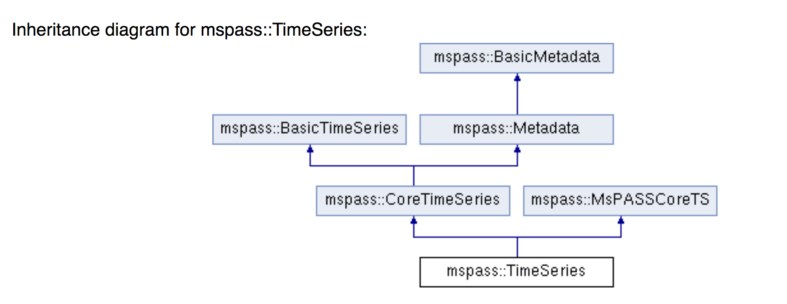
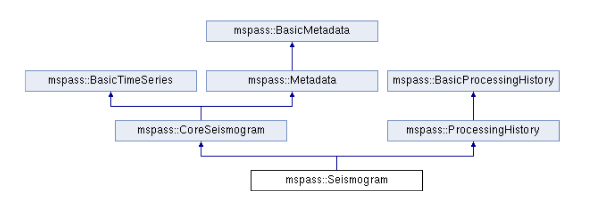

The core data objects in MsPASS were designed to encapsulate the
most atomic objects in seismology waveform process: scalar
(i.e. single channel) signals, and three component
signals. The versions of these you as a user should
normally interact with are two objects defined in MsPASS as TimeSeries
and Seismogram respectively.
These data objects were designed to simply interactions with
MongoDB. MongoDB is completely flexible in attributes names
handled by the database. We manage the attribute names and
data types through an interfacing object we call MetadataDefinitions
that is a required in most python database interactions.
Data objects are grouped in memory with a generic concept called
an Ensemble. The implementation in C++ uses a
template to define a generic ensemble. A limitation of
the current capability to link C++ binary code with python is that
templates do not translate directly. Consequently, the
python interface uses two different names to define Ensembles of
TimeSeries and Seismogram objects: TimeSeriesEnsemble
and ThreeComponentEnsemble respectively.
ThreeComponentEnemble is a bit of a mismatch in a naming
convention, but we felt the name was long enough already that the
name seems clearer than the alternative of
SeismogramEnsemble.
The C++ objects have wrappers for python that hide the details
from the user. All MongoDB operations implemented with the
pymongo package using these wrappers. Numerical operations
on the sample data should either be written in C/C++ with their
own wrappers or exploit numpy/scipy numerical routines. The
later is possible because the wrappers make the data arrays look
like numpy arrays.
It might be helpful for the user to recognize that the core data
objects in MsPASS are the second generation of a set of data
objects developed by one of the authors (Pavlis) over a period of
more than 15 years. The original implementation was
developed as a component of Antelope. It was distribured via
the open source additions to Antelope distributed through the antelope user's group and referred
to as SEISPP. The bulk of the original code can be found here
in github, and doxygen generated pages comparable to those found
with this package can be found here.
To build the core data objects from this older library we
followed standard advice and mostly burned the original keeping
only the most generic with features the authors had found
essential over the years. The revisions followed these
guidelines:
The reader needs to first see the big picture of how TimeSeries
and Seismogram objects are defined to understand the core concepts
described in sections that follow. We assume the reader has
some understanding of the concepts of inheritance in object
oriented code. The inheritance structure use we best
understood as derived from the SEISPP prototype (see history
above). We aimed to rebranch and prune
SEISPP based on the experience from 15 years of development
for SEISPP.
The (admittedly) complicated inheritance diagrams for TimeSeries
and Seismogram objects generated by doxygen are illustrated below


Notice that both CoreSeismogram and CoreTime series have a common
inheritance from three base classes: BasicTimeSeries,
BasicMetadata, and MsPASSCoreTS. Python
supports multiple inheritance and the wrappers make dynamic
casting within the hierarchy automatic. e.g. a Seismogram
object can be passed directly to a python function that does only
Metadata operations and it will be handled seamlessly because
python does no enforce type signatures on functions.
CoreTimeSeries and CoreSeismogram should be though of a core data
that is independent of MsPASS. Common features need by
both objects to interact with MsPASS are inherited from
MsPASSCoreTS. A key point is that future users
could chose to prune the MsPASSCoreTS component and build on
CoreTimeSeries and CoreSeismogram and have no dependence upon
MsPASS to build a completely different framework.
The remainder of this section discusses the individual components
in the class hierarchy.
This base class object can be best viewed as an answer to this questions: What is a time series? Our design answers this question by saying all time series data have the following elements:
BasicTimeSeries uses public attributes to define the base
properties discussed in the points above and has methods that are
common to any data with these properties. (e.g. a time(n)
method returns the computed time for sample number n.)
An unusual attribute borrowed from reflection processing is the
boolean variable with the name live. Data not
marked live (live == false) should normally be passed through a
processing chain, but will always be dropped by database
writers. Other public attributes are public for convenience,
but changing any of them must be done with caution.
MsPASS uses a generalization to handle time that is the same as a
novel method used in the original SEISPP library. The
concept can be thought of as a generalized, but yet simplified
version of how SAC handles time. The time standard is
defined by an enum class in C++ called tref which is mapped to
fixed names in python. There are currently two
options:
All data objects used by the MsPASS C++ library inherit a
Metadata object. A Metadata object is best thought
of through either of two concepts well known to most
seismologists: (1) headers (SAC), and (2) a dictionary
container in python. Both are ways to handle a
general, modern concept of metadata
commonly defined as "data that provides information about
data". Packages like SAC use fixed (usually binary fields)
slots in an external data format to define a finite set of
attributes with a fixed namespace. obspy uses a python
dictionary like container they call Stats
to store comparable information. That approach allows
metadata attributes to be extracted from a flexible container
addressable by a key word and that can contain any valid
data. For example, a typical obspy script will contain
a line like this:
sta=d.Stats["station]
to fetch the station name from a Trace object, d.
In MsPASS we use a similar concept building on Pavlis's SEISPP
library developed originally a number of years before
obspy. The Metadata object in MsPASS, however, has
additional features not in the older SEISPP version.
The mspass::Metadata object has a container that can hold any
valid data much like a python dictionary. The current
implementation uses the any
library that is part of the widely used boost library.
In a C++ program Metadata can contain any data that, to quote the
documentation, is "copy constructable". The python
interface, however, is much more restrictive for a number of
reasons. The most important, however, is that to interact
cleanly with MongoDB we elected to limit the set of allowed types
for Metadata attributes to those supported as distinct types in
the python MongoDB API. That list is defined here.
In principle, MongoDB can support generic "array" and "object"
types that could contain serialized containers, but currently
MsPASS only supports core types in all database engines:
real numbers (float or double), integers (32 or 64 bit), strings
(currently assumed to be UTF-8), and booleans. This
creates some rigidity in the python API to a Metadata.
There are four "getters" seen in the following contrived code
segment:
# Assume d is a Seismogram or TimeSeries which automatically casts to a Metadata in the python API use hereThere are parallel "putter":
x=d.get_double("t0") # example fetching a floating point number - here a start time
n=d.get_int("nsamp") # example fetching an integer
s=d.get_string("sta") # example fetching a UTF-8 string
b=d.get_bool("LPSPOL") # boolean for positive polarity used in SAC
d.put_double("to",x)
d.put_int("nsamp",n)
d.put_string("sta",s)
d.put_bool("LPSPOL",True)
Mapping the C++ Metadata container to python was a challenge
because of a fundamental difference in an axiom of the two
languages: python has a loose definition of "type"
while C/C++ are "strongly typed". To understand the
difference note that all C/C++ code REQUIRES all variables to be
declared before use with a type specification while python has no
concept of "declaration" in the language at all. In python
the same variable name can change from a simple integer to some
much more complicated type like an obspy Trace object.
Similar usage in a C program will always fail to
compile. To assure consistency on this issue the
Metadata container will throw an exception (RuntimeError in python
and MsPASSError in C++) if a user tries to extract a parameter
with the wrong type. For example:
d.put("sta","AAK")This effectively creates a strong typing layer between python and the C libraries to prevent type collisions that would otherwise be too easy to create. A related feature in MsPASS described in the next section, which we call MetadataDefinitions, can be thought of as a referee that can be used to guarantee type consistency of any key:value pair that is to be read from or written to MongoDB.
s=d.get_string("sta") # this succeeds because sta was set a string
x-d.get_double("sta") # this will throw an exception because "sta" was not set as a real number.
A MetadataDefinitions object is required by all MongoDB functions
that perform CRUD operations to MongoDB with data
objects. It has two critical purposes when interacting
with MongoDB:
from mspasspy import MetadataDefinitionsThis loads the default namespace. Alternatives are possible, but should be used only for specialized applications algorithms that require a different namespace. For example, in principle it should be possible to build a specialized configuration to build a MetadataDefinitions object that could be used to translate between the SAC or SEGY namespaces and mspass.
mdef=MetadataDefinitions()
MsPASS currently supports two different data objects:
TimeSeries is used to store single channel data while Seismogram
is used to store data from three component instruments.
TimeSeries objects are based on the standard concept for storing
scalar data that has been around since the earliest days of
digital seismic data in the oil and gas industry. That is,
the sample values are stored in a continuous
block of memory that we abstract as an array/vector.
The index for the array serves as a proxy for time (time method
in BasicTimeSeries). We use a C++ standard
template library vector container to hold the sample data
accessible through the public variable s. The python API
makes the vector container look like a numpy array that can be
accessed in same way sample data are handled in an obspy Trace
object in the "data" array. They can similarly be
processed with the wide variety of operations available in scipy
(e.g. simple
bandpass filters).
Although scalar time series data are treated the same (i.e. as a
vector) in every seismic processing system we are aware of, the
handling of three component data is not at all
standardized. There are several reasons for this
created by some practical data issues:
from mspasspy import SeismogramNote we use the C (an python) convention for indexing starting at 0. In the C++ API the matrix u is defined with a lightweight implementation of a matrix as the data object. That detail is largely irrelevant to python programmers as the matrix is equivalenced to a numpy matrix by the wrappers. Hence, python programmers familiar with numpy can manipulate the data in the u matrix with all the tools of numpy.
d=Seismogram(100) # Create an empty Seismogram with storage for 100 time steps initialized to all zeros
d.u(0,50)=1.0 # Create a delta function at time t0+dt*50 in channel 0
template <typename Tdata> class Ensemble : public Metadatawhere we omit all standard constuctors and methods to focus on the key issues here. First, an Ensemble is little more than a vector of data objects with a Metadata object to store attributes common to the entire ensemble. Hence, the idea is to store global attributes in the Ensemble Metadata field. There is a "dismember" algorithm in MsPASS (NOT YET IMPLEMENTED by already present in seispp and easy to implement) that takes this structure apart and copies the Metadata components into each member. The vector container makes it simple to handle an entire group (Ensemble) with a simple loop. e.g. here is a simple loop to work through an entire Ensemble (defined in this code segment with the symbol d) in order of the vector index:
{
public:
vector<Tdata> member;
...
Tdata& operator[](const int n) const
...
}
n=d.member.size()NOT SURE ABOUT THE ABOVE SYNTAX IN THE PYTHON API. COULD BE () INSTEAD OF []
for i in range(n):
somefunction(d.member[i]) # pass member i to somefunction
The class hierarchy diagrams above show there are CoreTimeSeries
and CoreSeismogram objects that are parents of TimeSeries and
Seismogram respectively. That design was aimed to make
the Core objects more readily extendible to other uses than
MsPASS. We encourage users to consider using the core
objects as base for other ways of handling seismic
data.
All mspass specific elements of our implementation are in
MsPASSCoreTS which is a parent for both TimeSeries and Seismogram
objects. MsPASSCoreTS has two elements:
When processing large volumes of data errors are inevitable and
handling them clearly is an essential part of any processing
framework. This is particularly challenging with a
system like Spark where a data set gets fragmented and handled by
(potentially) many processors. A poorly designed error
handling system could abort an entire workflow if one function on
one piece of data threw some kinds of "fatal" errors.
To handle this problem MsPASS uses a novel ErrorLogger
object. Any data processing module in MsPASS should NEVER
exit on any error condition except one from which the operating
system cannot recover. All C++ and python processing modules
need to have appropriate error handles (i.e. try/catch in C++ and
try/except in python) to keep a single error from prematurely
killing a large processing job. We recommend all error
handlers in processing functions post a message that can help
debug the error. Error messages should be registered
with the data object's elog object. Error messages
should not normally be just posted to stdout (i.e. print in
python) for two reasons. First, stream io is not thread safe
and garbled output is nearly guaranteed unless the log message are
rare. Second, with a large dataset it can become a nearly
impossible to find out which pieces of data created the
errors. Proper application of the ErrorLogger object
will eliminate both of these problems.
Multiple methods are available to post errors of severity from
fatal to logging messages that do not necessarily indicate an
error. A small python code segment may illustrate this
more clearly. :
try:To understand the code above assume the symbol d is a Seismogram object with a singular transformation matrix created, for example, by incorrectly building the object with two redundant east-west components. The rotate_to_standard method tries to compute a matrix inverse of the transformation matrix, which will generate an exception. This code catches that exception with a python RuntimeError. In this simple case we compose our own error message and post it to the ErrorLogger attached to this data (d.elog). The ErrorSeverity.Invalid implies the data are bad so the last line sets the live boolean false. In contrast, the call to log_verbose, like the name suggests, writes a pure informational message.
d.rotate_to_standard()
d.elog.log_verbose("rotate_to_standard succeed for me")
...
except RuntimeError:
d.elog.log_error("rotate_to_standard method failure - transformation matrix may be singular",
ErrorSeverity.Invalid)
d.live=False # note in python just be False not false